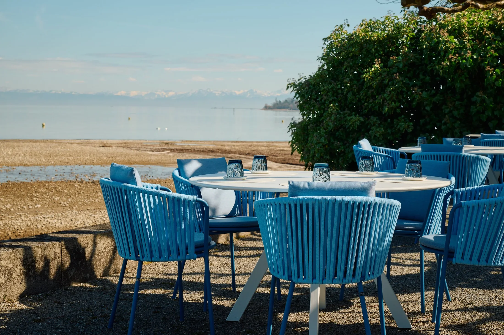
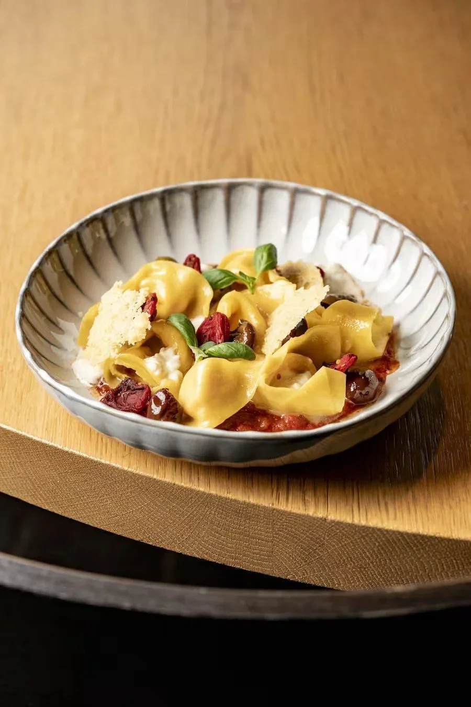
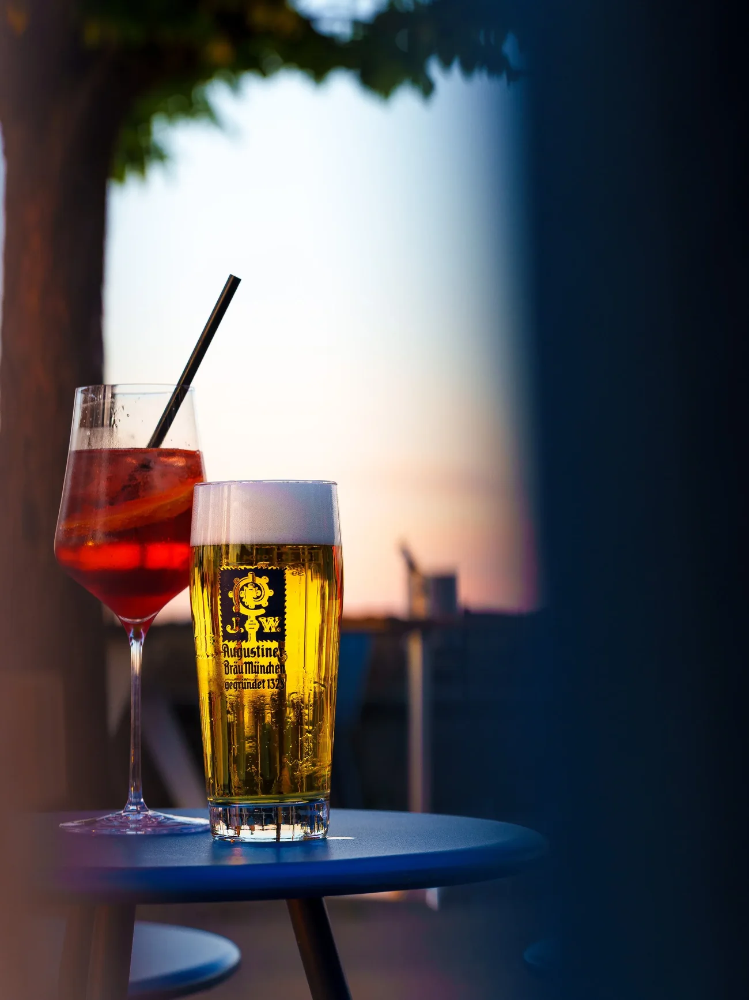
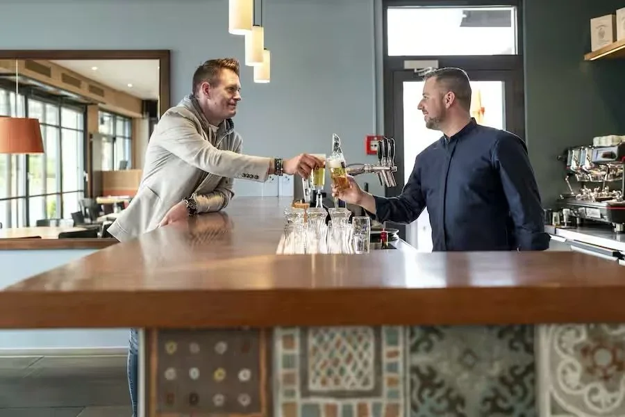

Seestrasse 50 · Bottighofen
Direkt im Hafen von Bottighofen gelegen mit Blick aufs Wasser und die Alpen.
Die schönste Terrasse am BodenseeChristian Kuchler
Monika Huber · Küchenchefin
Die Speisekarte des Oktobers ist nach Ländern geordnet. Gekocht wird von einem jungen Küchenteam unter der Leitung von Monika Huber, ehemals Sous-Chefin von Christian Kuchler.

An der Bar · den ganzen Tag

